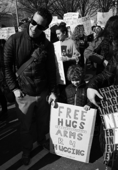
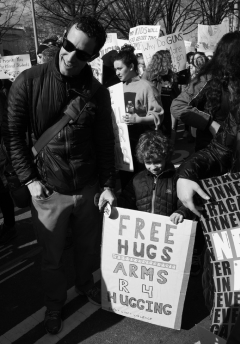
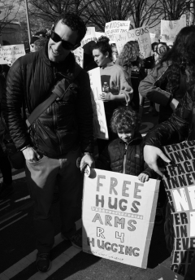

Human. Brother. Founder. Technologist. Enjoyer. Son of Alexandra. Follower of Christ.
site sounds
(thoughts)
(research)
 

Human. Brother. Founder. Technologist. Enjoyer. Son of Alexandra. Follower of Christ.
